Gallery
2018
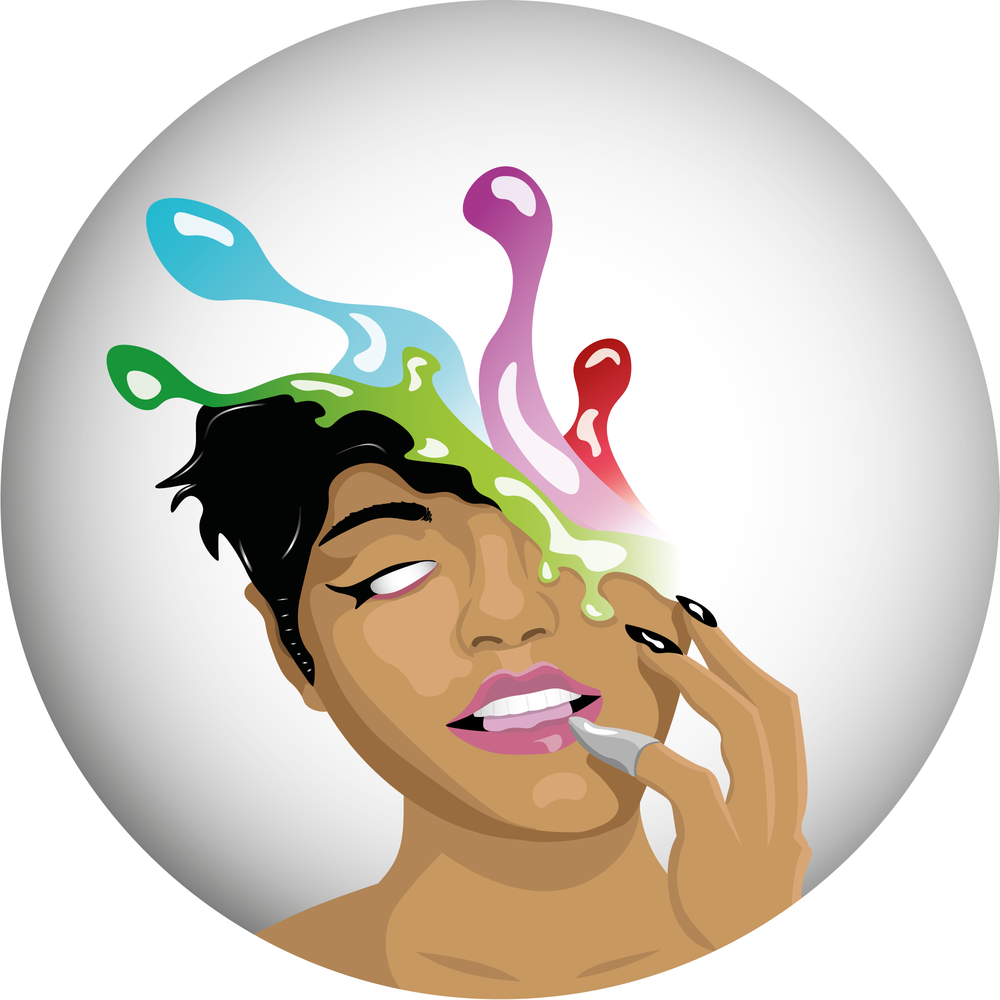
Remake of an older project of Rihanna. You can find the original if you scroll down on the page.
Just had some fun working with the letter "F". Couldn't sleep one night so started to sketch this in my sketch book. I decided to actually make it in Illustrator later on.
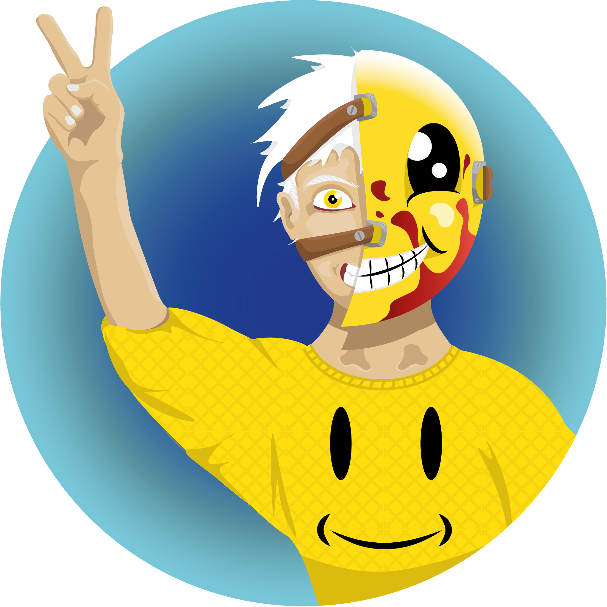
I made a remake of a earlier drawing. It is only drawn in Illustrator this time.
Did the 30 days logo challenge. Had to make a logo for a company that rents office space to freelancers or small companies. The company name was "Space". This is what I came up with.
Saw a backpack and started to think of the letter B. Started to draw this.

Could not sleep a night because I was thinking of this logo. started to sketch the "F" as an fighter. And came up with the name later on. Kung-Fu just matched the concept so I just went with it..
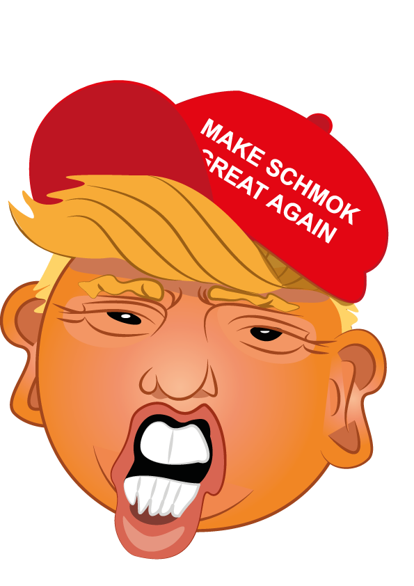
I made this Trump icon for a campaign we had for our student association. The point was to promote the election for a new association leader.
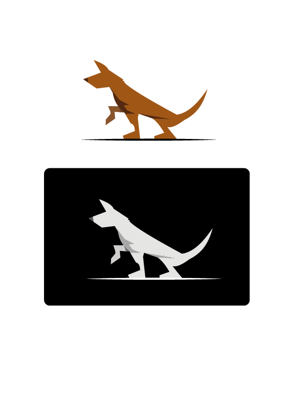
This was my attempt at drawing a simplified dog. Testing my skills at a new art style.
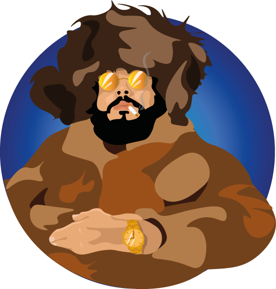
I decided to try to draw a human being based on abstract shapes. I took inspiration from a profile picture of a friend on Facebook. Where he sat in a fur coat with a usjanka.

Saw a tutorial on greyscale drawing and how to later convert it to colors. The point of the exercise was that it is a lot easier to place shadows in grayscale. You draw everything in tones of grey and then later draw over with colors on a different layer. The different layer I placed above with soft light as the blend option. This method gives you accurate color shading and shades.
2017
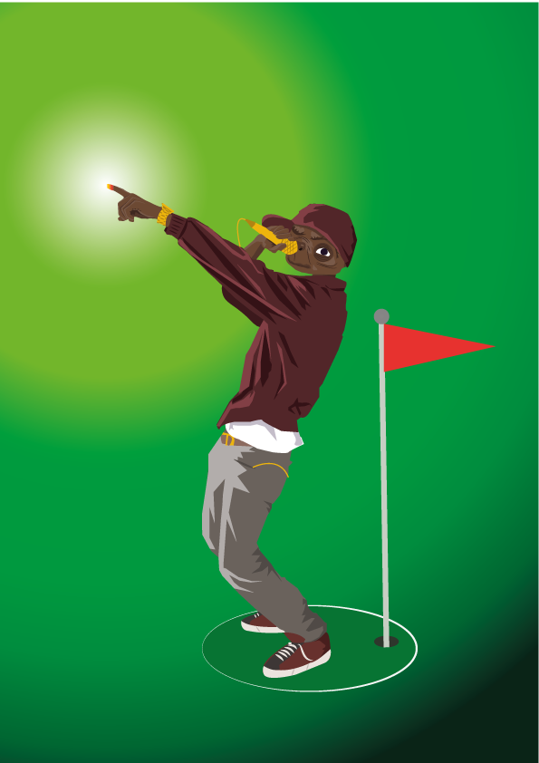
I had a task in class to make a cd art cover, and the example cover we could use for inspiration had a guy pointing his finger in the air. The way he pointed his finger in the air reminded me of E.T, so I decided to draw E.T as an rapper.
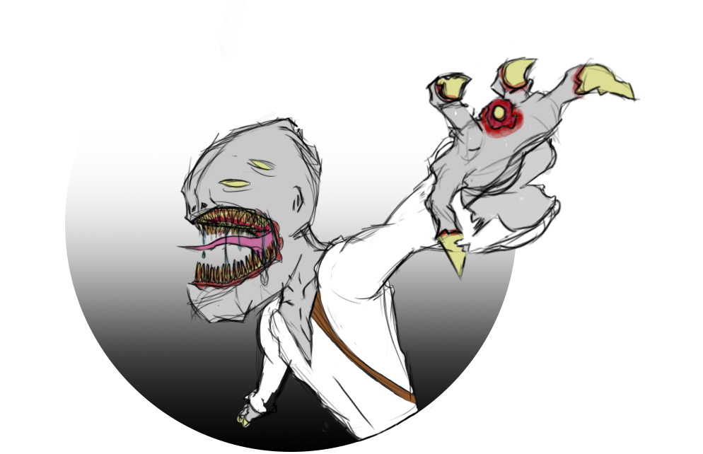
This is drawn in photoshop right after i got my drawing tablet/pc (surface). Was mainly an exercise in using the computer.
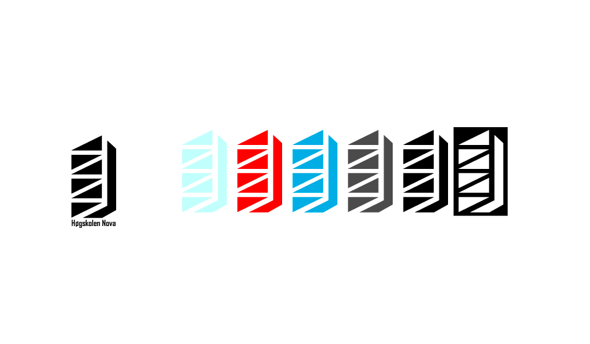
This was for an exam I had the second year of studying at the university we was told to design a new logo for the university. This is a open door, for a way into new possibilities. A book for knowledge. And a building because the university is an urban university.

The artist “Lil Pump” got popular for the song Gucci gang. I decided to draw him for playlist logo for a trip with some friends.

This was for an exam I had the second year of studying at the university we was told to design a new logo for the university. This is a open door, for a way into new possibilities. A book for knowledge. And a building because the university is an urban university.
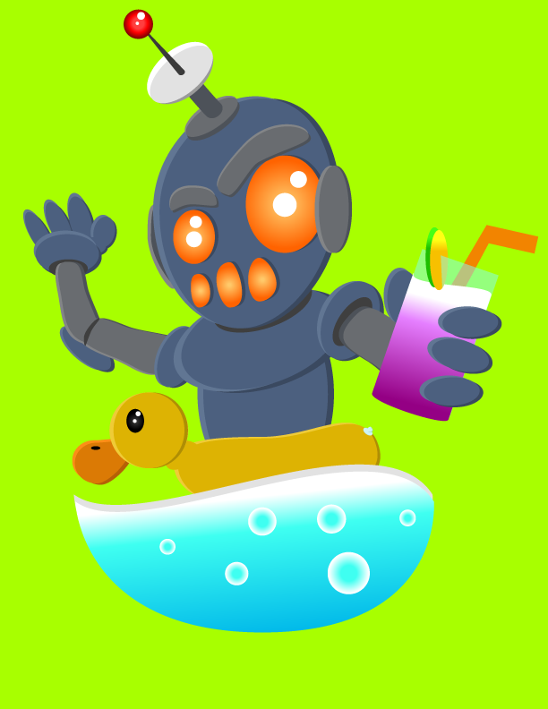
We learned to use geometric shapes for illustration. This one was an exercise at this. Mostly used circles. But some edited squares for more advanced shapes.
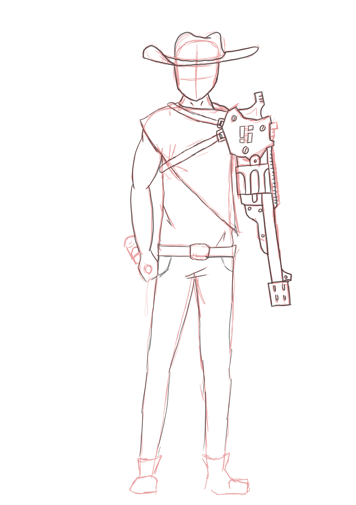
I had a thing for drawing character concepts. This is just a draft of a character that I wanted to create. A cyborg cowboy. With a revolver as his robotic arm.
2016

This is the first Logo I Made for publishing, and it got used by Bjerke secondary school. This logo was meant for a dancing show hosted by the school. It was also printed on hoodies
I made this logo for my youth enterprise. And this logo continued to represent us the rest of the enterprises lifetime

This was supposed to be for a “russ” group. Russ is the Norwegian secondary school students who celebrates being done with graduation. But I lost my access to the software’s for making this. So the job did not get finished.
2015
This was a fast photoshop that I did while waiting for my oral exam. I always liked the concept of floating islands. And pictured an alternative island resort.
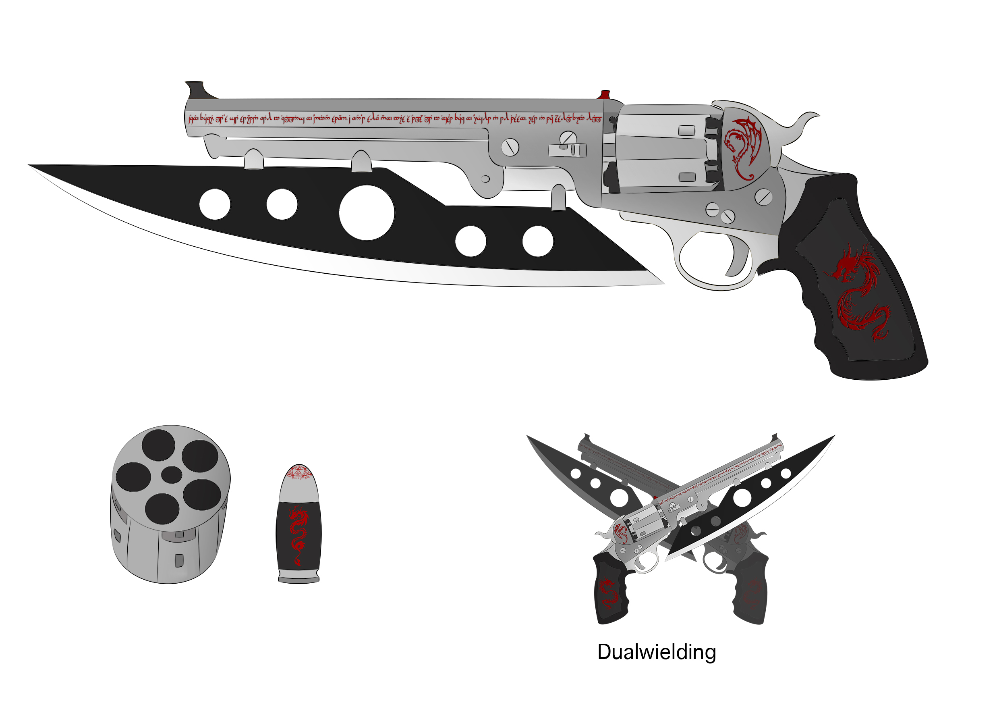
Have you ever thought of a bad ass monster/demon hunter wielding a pair of bad ass revolvers? Well doesn’t matter if you have done so, I have, and here is the result. I have also drawn more weapon concept art. This was meant for a game me and my friend started at in unreal engine.
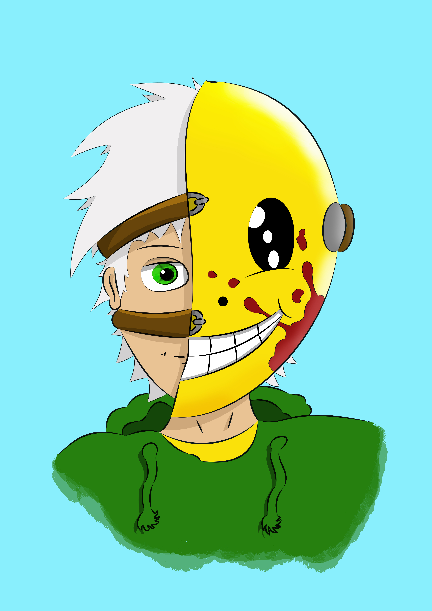
Here you can see my early stage of me combining Adobe Illustrator and Photoshop. The problem here was that I was to inpatient, so I didn’t look over and fix the small mistakes. But it is still a worthy character design.

This was a task I got from my digital art teacher to learn to draw people in a different proportion than from the front. Since he was tired of me doing so. I drew over a pose from a baseball player with his baseball bat over his shoulder (the sword). I also decided to combine every “anime” character I knew at the time. I still cringe a little, but it shows my progress.
2014

Ever heard of the Japanese cartoon One piece, or bleach? Either way this is a combination of those to. First time drawing over and making something digital In Photoshop. Decided to have this in the gallery because it is the beginning of it all.